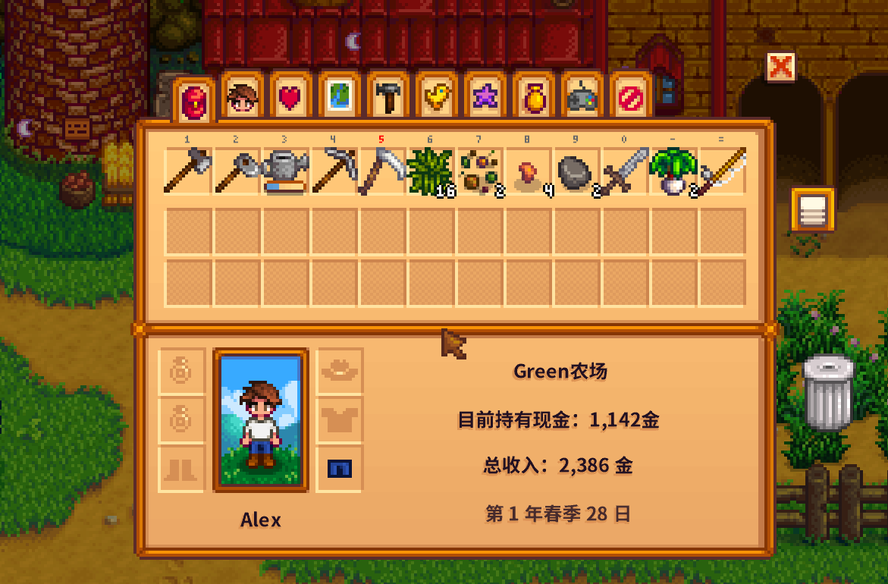
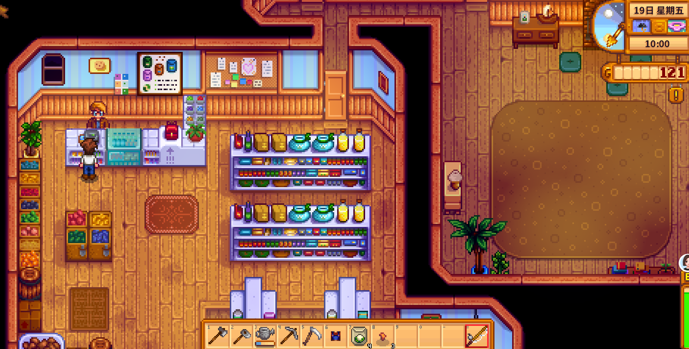

Quick answers (read this first)
- Full toolbar = you cannot pick new items. Free a slot before foraging or mining.
- Open inventory with
Esc. Drag junk to the trash can icon. - Ship extras overnight in the wooden bin by the house.
- Pierre sells a backpack upgrade (red pack on the counter)—a top Year 1 QoL buy when space is the daily pain.
- Never trash tools, unique artifacts, or your last seeds.
Who this is for (and who should skip)
Use this if forage stays on the ground, mines fill you with stone, or you do not know what the red backpack at Pierre’s is for. Inventory clog is one of the most common Year 1 friction points—and one of the easiest to fix with habits and one upgrade.
Skip or skim if you already run sorted chests and max backpack. This is early clog relief, not endgame warehouse management.
Version note (Stardew Valley 1.6): Inventory row counts and upgrade availability are unchanged in 1.6. Pierre’s backpack price is shown in his shop menu—buy when inventory pain is real, not on day-one fear of missing out. The 1.6 update improves menu navigation on some platforms, which makes trash-and-sort slightly faster, but the trash can still permanently deletes items.
From our Year 1 save (real pitfalls): the I key often fails with Chinese IME active—use the Esc menu or switch to English input. Buy the backpack at Pierre’s when space hurts daily. The shipping bin clears junk sellables overnight so tomorrow’s forage has somewhere to go.
Pros & cons of buying backpack early
| Details | |
|---|---|
| Pros | Fewer dropped items; longer mine trips; less trash anxiety; room for geodes and forage on one run. |
| Cons | Costs seed money; does not fix a giant unwatered farm or empty crop patch. |
| Use when | You hit full inventory before noon most days. |
| Skip when | Patch is empty and you still need seasonal seeds more than space. |
Storage style comparison: trash-heavy vs chest-first vs ship-nightly
| Style | How it works | Trade-off |
|---|---|---|
| Trash-heavy minimalist | Delete stone/fiber fast; buy backpack sooner | Risk of trashing something useful if panicking |
| One unsorted chest | Dump maybes near house; sort later | Chest becomes a junk drawer—still better than full hotbar |
| Ship-nightly | Bin clears sellables every evening | Cannot recover shipped items until tomorrow’s summary |
| Bundle-aware chest | Mental label: Community Center / museum | Slightly more thinking; fewer donation regrets |
Personal tips from our Year 1 save
Screenshot 40 shows a full top row still blocking pickups—we open Esc before mines, not after. One house chest held artifacts; screenshot 21’s bin cleared sellables nightly. Screenshot 14 is a normal Pierre open-day trip—buy the backpack from his shop menu when inventory pain beats seed pain. Visit on a day Pierre is open—Wednesdays he is closed.
Interactive checklist
Tick as you play. Saved in this browser only.
Safe to skip (anti-FOMO)
- Perfect chest labeling in week one.
- Keeping huge stone stacks when inventory is tight.
- Buying backpack before you can water a small patch.
- Dropping items on the ground as storage—they clutter tiles and feel lost.
Decision table: trash, ship, chest, keep
| Item | Usually… | Exception |
|---|---|---|
| Stone / fiber piles | Trash or ship | Saving a little for crafting |
| Extra crops | Ship | Keep a few for bundles |
| Unknown artifact | Chest → museum | Never trash first copy |
| Tools / rod / sword | Keep forever | — |
| Seeds for current season | Keep | Ship only true extras |
| Copper ore / geodes | Keep or chest | Never trash in a panic |
Real screenshots from our Year 1 save

Game screenshot © ConcernedApe — used for guide commentary

Game screenshot © ConcernedApe — used for guide commentary

Game screenshot © ConcernedApe — used for guide commentary
How to unstick a full bag (operations)
- Press
Esc; scan slots. Separate junk from tools, seeds, artifacts. - Trash confirmed junk. Deletion is permanent—slow down.
- Ship clear sellables at the bin.
- Chest unknown artifacts and minerals. Never trash first copies.
- If daily clog, buy Pierre’s backpack on an open day.
- Rebuild hotbar: tools, can, snack, empty slots.
- Before mining, keep two free slots. Ore stacks fast.
- Ship nightly before bed. Tomorrow starts with room.
Common mistakes
- Trashing copper ore or geodes in a panic. Slow down. Ore feeds tool upgrades; geodes feed the museum. Chest them if unsure.
- Leaving the inventory menu open while trying to eat. Close the menu first, then right-click food on the hotbar.
- Buying cosmetics while inventory is still tiny. Space beats wallpaper in Year 1. Backpack or seeds first depending on daily pain.
- Mining with zero free slots. You will leave ore on the floor or stop progressing entirely. Unstick the bag before the elevator.
- Ignoring the backpack for a whole season. Quality of life compounds—every day with a full hotbar is a day of dropped loot.
Alternative variations
- Chest maximalist: One unsorted chest is enough early. Sort when you feel like it—not week one.
- Minimalist: Trash aggressively on stone and fiber; buy backpack sooner. Works if you slow down before deleting unknowns.
- Bundle-aware: Dedicated chest mentally labeled Community Center or museum. Reduces donation regrets in Summer and Fall.
FAQ
Why can’t I pick anything up?
No free inventory slots. Trash junk, ship sellables, chest maybes, or buy Pierre’s backpack upgrade. Every slot must be empty or freed—not just the hotbar row.
Backpack or seeds first?
Empty patch → seeds. Full bag every morning → backpack. Whichever pain hits harder today wins. Both matter; order depends on your save.
Is the trash can permanent deletion?
Yes for practical purposes. Do not trash tools, your only rod, or first artifacts. When unsure, chest instead.
When is Pierre closed?
Wednesdays. Plan backpack and seed trips on other days unless you have other shops to visit.
Can I move items into chests from anywhere?
You need to stand adjacent to a placed chest. Put one near the house early so nightly sorting is quick.
Next steps / related pages
Unofficial fan guide. Not affiliated with ConcernedApe.